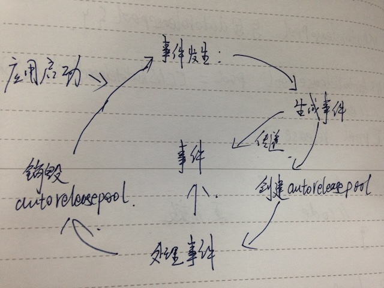

Objective-C:内存管理
基于引用计数的内存管理
内存管理方式
引用计数
iOS中使用retainCount来管理Objc对象的内存，通过retain来增加引用计数，release减少引用计数，retainCount检查引用计数，retainCount为0，该对象将被释放。
垃圾回收
在MacOS的开发中，有垃圾回收的内存管理机制，不过在MacOS10.10左右，该机制被废弃，改用引用计数。
autorelease
- 发送autorelease消息，表示将对象加入到autoreleasePool中；
- 除了alloc、new、copy、mutableCopy等关键字的类构建方法（便利构造方法），会对对象自动发送autorelease消息，将其加入autoreleasePool中；
- 被加入autoreleasePool中的对象，将在autoreleasePool销毁时，被发送release消息。
autoreleasePool
NSAutoreleasePool
NSAutoreleasePool是MRC时代的旧的API，只能在MRC中使用，其用法如下：
~~~objective-c
NSAutorelaesePool * pool = [NSAutorelaesePool new];
// code here
[pool release];
~~~NSAutoreleasePool 在循环中要注意不能被break，否则对象无法释放。
@autoreleasepool{}
@autoreleasepool{} 是新的API，既可以在MRC中使用，也可以在ARC中使用，而且不必担心break，性能也比NSAutoreleasePool高：
~~~objective-c
@autoreleasepool {
// code here
}
~~~autoreleasePool的创建和释放时机:

autoreleasePool的使用时机:
- 程序不基于UIFramework（命令行项目）；
- 循环内创建大量临时对象或者长期执行的任务中有大量临时对象；
- 新线程开始执行时。
setter与dealloc
setter
MRC一个错误的setter示范：
~~~objective-c
- (void)setValue:(id)value {
[_value release];
_value = [value retain];
}
~~~当_value 和 value是同一个对象是，这种写法会导致value提前释放。 安全的setter写法：
~~~objective-c
- (void)setValue:(id)value {
id temp = _value；
[value retain];
_value = value;
[temp release];
}
// 或者
- (void)setValue:(id)value {
if (_value != value) {
[_value release];
_value = [value retain];
}
}
~~~dealloc
~~~objective-c
@interface MyBuffer:NSObject {
NSString * fileName;
NSView * fileMonitorView;
char * buffer;
FILE * fp;
}
~~~MRC 中 除了调用父类的dealloc方法之外，不允许显示的调用dealloc:
~~~objective-c
- (void)dealloc {
[fileName release];
[fileMonitorView release];
if (buffer != NULL) {
free(buffer);
}
if (fp != NULL) {
fclose(fp);
}
[super dealloc];
}
~~~ARC 中 不允许调用父类的dealloc:
~~~objective-c
- (void)dealloc {
if (buffer != NULL) {
free(buffer);
}
if (fp != NULL) {
fclose(fp);
}
}
~~~weak, unsafe_unretained, __autoreleasing
__weak
- __weak 是ARC为了解决retainCycle而引入的；
- 弱引用是通过存储一个对象的指针创建的，且不保留对象；
- nonowning relationship。自动nil化，weak修饰的对象被释放，weak变量自动置nil，不会变成野指针。
使用时机：
- 已经对该对象有一个强引用，没必要再强引用的时候；
- 解决循环引用的时候；
__unsafe_unretained
非nil化的弱指针，更强调所有权不变更。
~~~objective-c
Person * p1 = [[Person alloc] intiWithName:@"alicy"];
__unsafe_unretained Person * temP = p1;
Person * p2 = temP;
temP = nil; // 所有权不变更
~~~类似Swift中的unOwned： 假定银行系统，一张信用卡（CreditCard）对应一个客户（Customer），但一个客户不一定有一张信用卡: Customer -> unsafe_unretained -> CreditCard; CreditCard -> strong -> Customer; 当该客户将信用卡从此银行注销时：
~~~objective-c
// CreditCard 的 dealloc：
- (void)dealloc {
[self.customer setCreditCard:nil];
}
~~~__autoreleasing
__autoreleasing的根本目的是获取一个延迟释放的对象。 比如NSString的初始化方法中：
~~~objective-c
- (nullable instancetype)initWithContentsOfFile:(NSString *)path encoding:(NSStringEncoding)enc error:(NSError **)error;
~~~ARC的编译器会自动为函数的二重指针变量加上一个__autoreleasing修饰符：
~~~objective-c
- (nullable instancetype)initWithContentsOfFile:(NSString *)path encoding:(NSStringEncoding)enc error:(__autoreleasing NSError **)error;
~~~相应的，我们使用这个函数的时候：
~~~objective-c
NSError * error = nil;
NSString * str = [[NSString alloc] initWithContentsOfFile:@"file" encoding:NSUTF8StringEncoding error:&error];
~~~ARC的编译器会转为：
~~~objective-c
NSError __strong * error = nil;
NSError __autoreleasing * tempError = error;
NSString * str = [[NSString alloc] initWithContentsOfFile:@"file" encoding:NSUTF8StringEncoding error:&tempError];
error = tempError;
~~~当我们传递一个为初始化的对象的引用到一个方法中，并在此方法中实例化该对象，且希望返回时这个对象被自动加入到autoreleasePool的时候，我们就可以使用__autoreleasing的关键字。